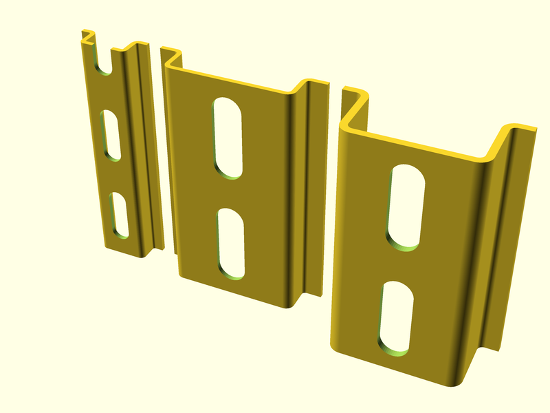
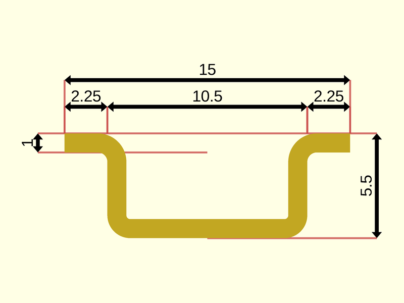
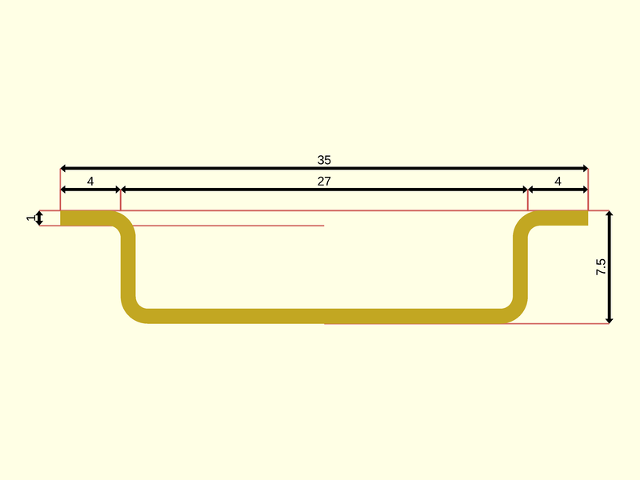
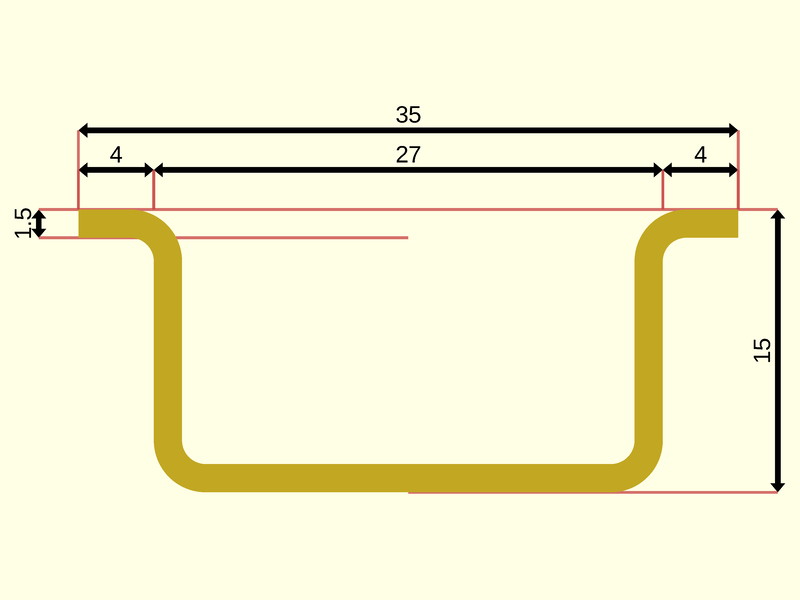

package artifacts/din_rails
Dependencies
graph LR
A1[artifacts/din_rails] --o|include| A2[foundation/dimensions]
A1 --o|include| A3[foundation/label]
A1 --o|include| A4[foundation/unsafe_defs]
A1 --o|include| A5[foundation/util]
A1 --o|use| A6[foundation/3d-engine]
A1 --o|use| A7[foundation/bbox-engine]A DIN rail is a metal rail of a standard type widely used for mounting circuit breakers and industrial control equipment inside equipment racks. These products are typically made from cold rolled carbon steel sheet with a zinc-plated or chromed bright surface finish. Although metallic, they are meant only for mechanical support and are not used as a busbar to conduct electric current, though they may provide a chassis grounding connection.
The term derives from the original specifications published by Deutsches Institut für Normung (DIN) in Germany, which have since been adopted as European (EN) and international (IEC) standards. The original concept was developed and implemented in Germany in 1928, and was elaborated into the present standards in the 1950s.

Organization
The package manages three type of objects:
- punches: ancillary type, eventually moved elsewhere in the future, defining the punch type to be performed on a rail.
- profiles: representing the different rail sections available. Currently supported types are type Ω top head sections. DIN profile instances are all prefixed with TS. The list of available profiles is contained in variable FL_DIN_TS_INVENTORY.
- DIN rails: concrete rail instantiations. DIN rail instances are prefixed with TH. The list of available rails is provided in variable FL_DIN_RAIL_INVENTORY .
Legal
This file is part of the 'OpenSCAD Foundation Library' (OFL) project.
Copyright © 2021, Giampiero Gabbiani giampiero@gabbiani.org
SPDX-License-Identifier: GPL-3.0-or-later
Variables
variable FL_DIN_NS
Default:
"DIN"
prefix used for namespacing
variable FL_DIN_PUNCH_4p2
Default:
concat(fl_Punch(20),[["DIN/rail/punch_d",4.2],["DIN/rail/punch_len",12.2],])
4.2 mm stepped punch
variable FL_DIN_PUNCH_6p3
Default:
concat(fl_Punch(25),[["DIN/rail/punch_d",6.3],["DIN/rail/punch_len",18],])
6.3 mm stepped punch
variable FL_DIN_RAIL_INVENTORY
Default:
[FL_DIN_RAIL_TH15,FL_DIN_RAIL_TH35,FL_DIN_RAIL_TH35D]
DIN rail constructor inventory.
Every constructor - while instantiating different concrete rail - has the same signature:
Constructor(length,punched=true);
variable FL_DIN_RAIL_TH15
Default:
function(length,punched=true)fl_DIN_Rail(profile=FL_DIN_TS15,punch=punched?FL_DIN_PUNCH_4p2:undef,length=length)
Constructor for 15mm DIN rail with eventual 4.2mm punch
variable FL_DIN_RAIL_TH35
Default:
function(length,punched=true)fl_DIN_Rail(profile=FL_DIN_TS35,punch=punched?FL_DIN_PUNCH_6p3:undef,length=length)
Constructor for 35mm DIN rail with eventual 6.3mm punch
variable FL_DIN_RAIL_TH35D
Default:
function(length,punched=true)fl_DIN_Rail(profile=FL_DIN_TS35D,punch=punched?FL_DIN_PUNCH_6p3:undef,length=length)
Constructor for 35mm DIN 'depth' variant rail with eventual 6.3mm punch
variable FL_DIN_TS15
Default:
fl_DIN_TopHatSection("TS15",size=[[10.5,15],5.5],r=[0.2,0.5])
Top hat section profile IEC/EN 60715 – 15×5.5 mm

variable FL_DIN_TS35
Default:
fl_DIN_TopHatSection("TS35",size=[[27,35],7.5],r=[.8,.8])
Top hat section profile IEC/EN 60715 – 35×7.5 mm

variable FL_DIN_TS35D
Default:
fl_DIN_TopHatSection("TS35D",size=[[27,35],15],r=[1.25,1.25],thick=1.5)
Top hat section profile IEC/EN 60715 – 35×15 mm

variable FL_DIN_TS_INVENTORY
Default:
[FL_DIN_TS15,FL_DIN_TS35,FL_DIN_TS35D]
DIN profile inventory
Functions
function fl_DIN_Rail
Syntax:
DIN Rails constructor
Parameters:
profile
one of the supported profiles (see variable FL_DIN_TS_INVENTORY)
length
overall rail length
punch
optional parameter as returned from fl_Punch()
function fl_DIN_TopHatSection
Syntax:
Constructor for Top hat section (TH), type O, or type Ω, with hat-shaped cross section.
Parameters:
description
optional description
size
Rails size in [[width-min,width-max],height]
r
internal radii [upper radius,lower radius]
function fl_DIN_profilePoints
Syntax:
DIN profile points property
function fl_DIN_profileSize
Syntax:
DIN profile size in [[width-min,width-max],height] format
function fl_DIN_profileThick
Syntax:
DIN profile thickness property
function fl_DIN_railProfile
Syntax:
DIN rail profile property
function fl_Punch
Syntax:
Punch constructor: it actually defines only the punch step, while the concrete punch shape is defined by the children passed to the punch engine.
Modules
module fl_DIN_puncher
Syntax:
fl_DIN_puncher()
This module defines the punch shape stepped by.
module fl_DIN_rail
Syntax:
fl_DIN_rail(verbs=FL_ADD,this,cut_drift=0,cut_dirs,octant,direction)
DIN rail engine module.
Context variables:
| Name | Context | Description |
|---|---|---|
| $fl_thickness | Parameter | Used during FL_CUTOUT (see also fl_parm_thickness()) |
| $fl_tolerance | Parameter | Used during FL_CUTOUT (see fl_parm_tolerance()) |
Parameters:
verbs
supported verbs: FL_ADD, FL_AXES, FL_BBOX, FL_CUTOUT, FL_DRILL, CO_FOOTPRINT, FL_LAYOUT, FL_MOUNT
cut_drift
translation applied to cutout (default 0)
cut_dirs
Cutout direction list in floating semi-axis list (see also fl_tt_isAxisList()).
Example:
cut_dirs=[-Z,+Z]
in this case the rail will perform a cutout along -Z and +Z.
:memo: NOTE: when undefined this parameter defaults to the preferred cutout directions as specified by fl_cutout().
octant
when undef native positioning is used
direction
desired direction [director,rotation], native direction when undef ([+X+Y+Z])
module fl_punch
Syntax:
fl_punch(punch,length,thick)
Performs a punch along the Z axis using children.
Context variables:
| Name | Context | Description |
|---|---|---|
| $punch | Children | the punch instance containing stepping data |
| $punch_step | Children | punch stepping |
| $punch_thick | Children | thickness of the performed punch to be used by children |
TODO: extend to other generic axes, move source into core library
Parameters:
punch
as returned by fl_Punch()